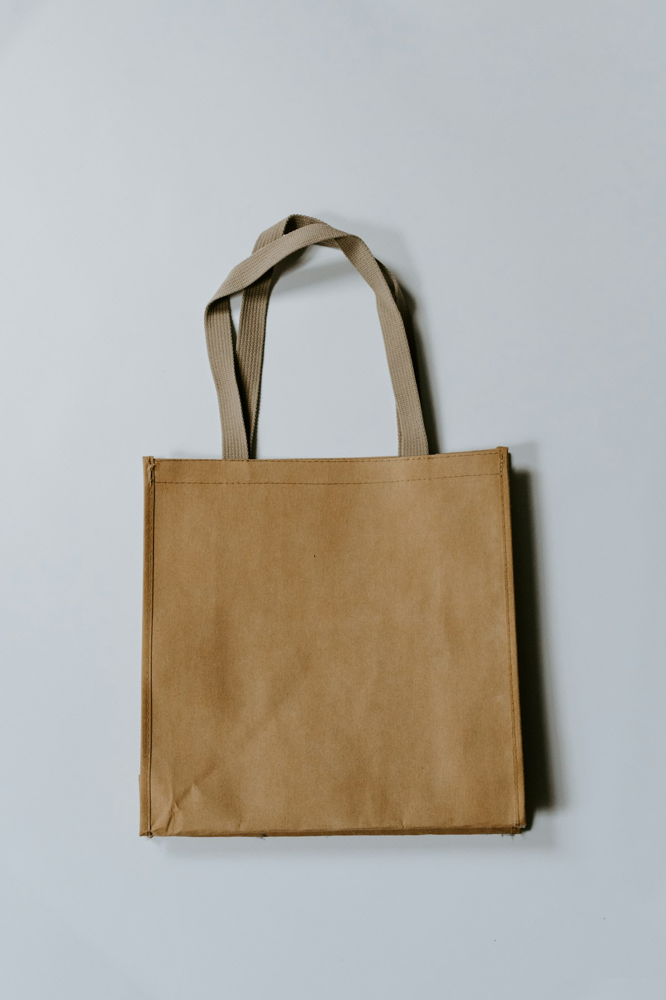
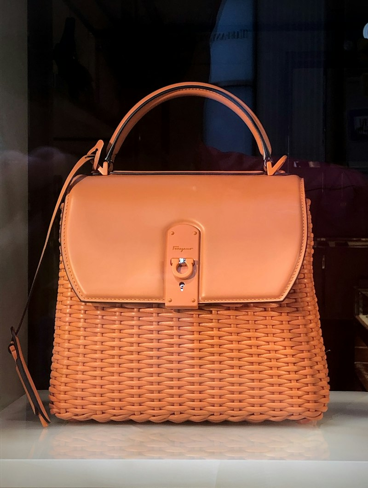
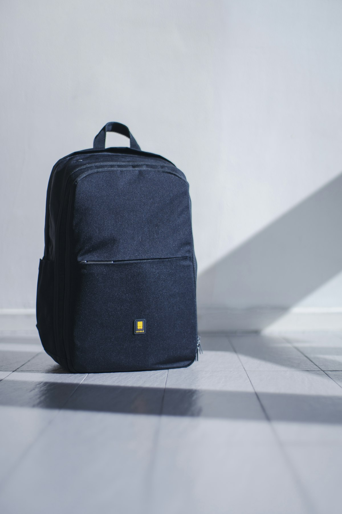

Borse, cinture e cartelle realizzate esclusivamente con cuoio toscano conciato al vegetale. Ogni pezzo nasce nel nostro laboratorio storico e racconta una storia destinata a durare nel tempo.
100% estratti naturali di mimosa e castagno toscano.
Lavorazione artigianale pezzo per pezzo, senza stampi industriali.
Iniziali impresse a caldo e personalizzazione completa.
La pelle viva che acquista fascino e patina anno dopo anno.
Firenze e la concia del cuoio condividono secoli di storia comune lungo le rive dell'Arno. Alla Bottega Cuoio & Stile, rifiutiamo la produzione seriale e i compromessi delle grandi catene.
Ogni mattina, nel nostro laboratorio a vista in Via dei Serragli, selezioniamo i migliori manti di pelle toscana a pieno fiore. Tagliati al trincetto, smussati, rifiniti a cera d'api e cuciti con filo cerato ad alta tenacità, i nostri manufatti sono pensati per essere tramandati.
Anno di Fondazione
Fatto a Firenze
Pelle Certificata

«Il vero cuoio non invecchia mai, vive insieme a chi lo indossa.»
— Maestro Marco, FondatoreDisponibili in bottega o realizzabili nei colori cuoio naturale, testa di moro, cognac e nero fiorentino.

Pezzo IconicoPelle pieno fiore tamponata a mano, chiusura in ottone massiccio anticato, scomparto interno foderato in puro cotone e tasca porta-smartphone.

ProfessionaleStruttura rinforzata per laptop fino a 15", scomparti documenti, impugnatura ergonomica in cuoio cucita a punto sellaio e tracolla comfort.
Design sottile da tasca, 8 alloggiamenti per carte, vano banconote e tasca portamonete a soffietto. Bordi tinti e lucidati a mano.
Possiamo realizzare cinture su misura tagliate sul momento, incidere le vostre iniziali a caldo o sviluppare un modello personalizzato secondo le vostre specifiche.
4.9 / 5 su oltre 180 valutazioni autentiche
«Ho acquistato una cartella da lavoro tre anni fa. Più passa il tempo, più il cuoio prende una sfumatura dorata incredibile. Una qualità che nei negozi del centro non si trova più.»
«La cortesia di farsi personalizzare una cintura sul momento con le proprie misure esatte e le iniziali incise. Un vero laboratorio toscano d'altri tempi. Complimenti sinceri!»
«Profumo di vero cuoio naturale appena si varca la soglia. La borsa Santo Spirito è stata un regalo per mia moglie che è rimasta incantata. Torneremo sicuramente!»
Siamo nel cuore autentico dell'Oltrarno fiorentino, a pochi passi da Piazza Santo Spirito e Palazzo Pitti. Vi aspettiamo per farvi toccare con mano la qualità del nostro pellame.
Bottega artigiana iscritta all'Albo degli Artigiani Tradizionali della Toscana. Certificazione di origine e garanzia di qualità su ogni manufatto.